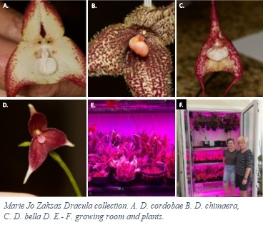

Orchid phylogenomics, systematics and macroevolutionary approaches
Phylogenomics of Lepanthes: (a) Description of new species (b) Chloroplasts - Backbone of Lepanthes. (c) Lephantes genom. (d) Lephantes of Colombia.
Phylogenomics and phylogeography of Lepanthes (Pleurothallidinae: Orquidaceae)
Species of the genus Lepanthes (tribe Epidendreae) belong to one of the most diverse plant families: Orchidaceae, with approximately 26,000 species currently described1. This genus is distributed from México to Bolivia and Brazil, and is also present in the Antilles and Cuba. Highest diversity of Lepanthes is found in the Andean region of Colombia and Ecuador with more than 300 species in each country. In general terms, this high diversity may be explained, among others, by the connection between three main hotspots worldwide (Mesoamerica, Choco/Darien/Western Ecuador and tropical Andes). But detailed molecular information is needed to understand Lepanthes evolutionary history, which will lead to better understanding of species diversification ultimately generating more informed conservation strategies.
The main goal of the proposed research is to reconstruct the evolutionary history of Lepanthes to use it as a framework for a new taxonomical classification. Additionally, we want to understand phylogeographic patterns that could explain their high diversification and endemism in the Colombian Andes.
Objective 1. To build a phylogeny for the Lepanthes species.
Objective 2. To generate the first taxonomical classification of the species of Lepanthes using a phylogenetic framework.
Objective 3. To understand Lepanthes phylogeography and diversification times in the Colombian Andes.
Phylogenomics of Dracula: Working with collectors and volunteers.
Phylogenomics of monkey orchids Dracula (Pleurothallidinae)
 The monkey orchid genus, Dracula, has approximately 144 species with restricted distributions, high rates of endemism in the northern Andes, and environmental requirements typical of plants inhabiting high elevation cloud forests. These factors make Dracula species vulnerable to extintion by habitat loss and climate change. The proposed research aims to reconstruct the evolutionary history of the genus Dracula to understand species delimitation, hybridization processes, and phylogeography of the genus in the northern Andes. We are working with private collectors, the Atlanta Botanical Gardens and Dracula researchers from Ecuador and Colombia to sequence more than 90 Dracula species and approximately 900 single-copy nuclear markers. This will allow us to recover the most complete Dracula phylogeny to date. Dracula species are likely excellent indicators of cloud forest health and in need of scientifically informed conservation strategies.
The goal of the proposed research is to reconstruct the evolutionary history of Dracula to develop a framework for a new taxonomical classification. Additionally, we want to understand the phylogeographic patterns along its distribution in the Northern Andes to explain their high diversification and endemism in these mountains.
Objective 1. To build a phylogeny for the Dracula species.
Objective 2. To generate the first classification of the species of Dracula using a phylogenetic framework.
Objective 3. To understand Dracula phylogeography and diversification times in the Colombian Andes.
Phylogenomics of Pleurothallis: Working with Mark Wilson and the collection at Colorado State University.
Conservation of Masdevallia subgenera Meleagris in the Colombian Andes
The genus Masdevallia belongs to the Pleurothallidinae neotropical sub-tribe, with approximately 12% of the sub-tribe species, which gathers about 5000 total estimated spp, possibly being the most diverse of the Orchidaceae family. Masdevallia is distributed in regions with a wide climatic range in Central and South America, and currently 500 to 600 species are estimated. The subgenus Meleagris has 12 species distributed between Colombia, Ecuador, Bolivia, Peru and Venezuela, in addition to presenting records in Costa Rica, Panama and Guyana. They generally have an epiphytic habit in humid forests and have been recorded at altitudes from 1250 to 3000 m.a.s.l., these characteristics favor variation, and in particular the opportunity to study their evolutionary relationships based on morphological characters. Given its distribution, it allows us to infer that all species share a common ancestor that possibly existed in the area of greatest diversity, the north of the Andes. Hence it is possible that speciation was allopatric given the rugged orography.
Populations the subgenera Meleagris (Masdevallia) historically used to have a widespread distribution in Antioquia but today populations are scarce due to habitat lost around the Aburra Valley. Very patchy populations have not been recorded in the field and the species are believed to be almost extinct. Private collectors from the Colombian Orchid Society (SCO) have in their greenhouses forty individuals that bloom periodically. These individuals could be used for selective breeding, in-vitro cultivation, reintroduction to natural protected areas such the SCO biological research station and periodic monitoring. However preliminary results for these species showed they are difficult to reproduce invitro by seed even when experimental cross-pollination in green houses have been performed. The knowledge gained will be implemented with many other orchid species and ornamental epiphytes and socialized through workshops, field practices and courses, aimed to raise awareness and generate initiatives for the conservation and sustainable use of natural resources. The commitment and awareness levels of the community in the preservation of orchids will be linked to education and implementation of management alternatives provided by the project’s scientific findings.
Goals
(1) An evaluation of the genetic diversity present in at least three natural populations and private collections of species in the subgenera Meleagris allows to estimate: (a) the best breeding program that boots outcrossing and genetic diversity, (b) the effective size of populations needed to reintroduce species in the field maintaining genetic diversity as a raw material for adaptation and resilience, (c) the cross-pollination strategies among populations within the first six months of the project.
(2) 1000 outcrossed individuals of Meleagris are grown through in-vitro tissue culture of seeds and conventional propagation techniques during the twelve months of this project.
(3) 600 individuals are reintroduced to several original areas where this species used to grow in the "District of Integrated Management: Cuchilla Jardin-Tamesis"
(4) Communities from Jardín Antioquia and close municipalities can adopt a sexual propagation protocols for orchids.